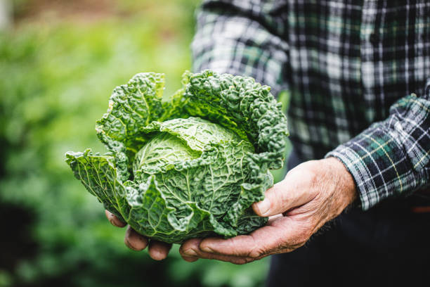
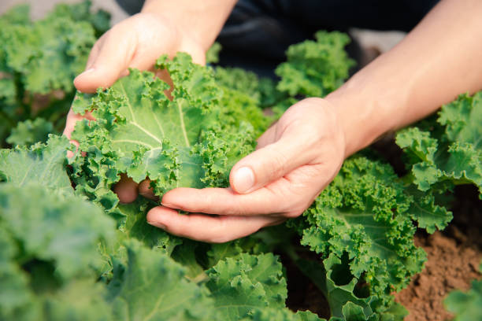
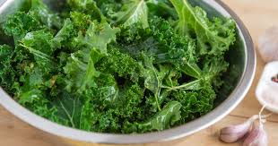

Amazing Health Benefits of Kale

Kale stands as one of nature's most nutrient-dense superfoods, packed with essential vitamins and
minerals that support optimal health. This remarkable leafy green contains more iron per calorie
than beef and more calcium per calorie than milk, making it an exceptional choice for both
vegetarians and health-conscious individuals. The high levels of antioxidants in kale, including
beta-carotene and vitamin C, help combat oxidative stress and support immune function.
Powerful Nutritional Profile
Rich in Essential Nutrients
One cup of raw kale contains an impressive array of nutrients, including 206% of your daily
vitamin A, 134% of vitamin C, and 684% of vitamin K requirements. This versatile vegetable
also provides significant amounts of manganese, calcium, potassium, and copper, making it an
excellent addition to any balanced diet. The high fiber content in kale supports digestive
health and helps maintain steady blood sugar levels.
Antioxidant Powerhouse
Kale's impressive antioxidant profile includes beta-carotene, vitamin C, and various
flavonoids and polyphenols. These compounds work together to protect your cells from
oxidative damage and support overall health. Regular consumption of kale has been linked to
improved heart health, better vision, and enhanced immune function, making it an essential
component of a healthy lifestyle.

Expert Cooking Tips

Transform raw kale into delicious meals by massaging it with a bit of olive oil and sea salt, which
helps break down the tough fibers and creates a more tender texture. For optimal nutrition
retention, steam kale lightly for 5 minutes or add it to smoothies, salads, and stir-fries. The
versatility of kale makes it an excellent addition to soups, pasta dishes, and even crispy snacks
when baked into chips.